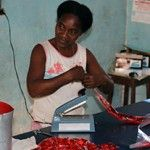
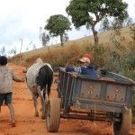

Madagaskar – ein Ort wo Projektreisen Sinn machen
PRIORI ist seit mehr als 20 Jahren aktiv sowie vor Ort in Madagaskar. Während dieser Zeit haben wir zahlreiche Organisationen, Initiativen, Partner sowie Kooperationen kennengelernt. Einige davon unterstützen wir seit vielen Jahren. Auch in der Schweiz sowie im deutschsprachigen Raum haben wir Kontakt zu vielen Organisationen sowie zu Projekten, die Madagaskars Menschen unterstützen.
Immer wieder veranstalten wir mit Kooperationspartnern oder für Organisationen Projektreisen nach Madagaskar.
Diese Reisen verbinden einen reinen Urlaubsaufenthalt mit dem Besuch von Hilfsprojekten – sei es Naturschutz oder seien es soziale Projekte – so ermöglichen sie eine ganz einzigartige, tiefgehende sowie intensive Reiseerfahrung.
So werden wir auch in diesem Jahr vom 02. bis 18. Oktober 2020 eine gemeinsame Solidaritätsreise mit dem CEAS (Centre Ecologique Albert Schweitzer) durchführen. In diesem hinterlegtem Dokument erhalten Sie alle Detailinformationen zu dieser Reise auf Deutsch. Ebenfalls finden Sie hier das Programm auch noch einmal in einer französischen Version.
Haben Sie noch Fragen oder möchten eine Projektreise mit uns anbieten, dann kontaktieren Sie uns gerne!
-

-
